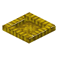
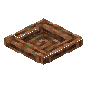

Simple Incubator Incubation
共 13 个条目 · incubation
版本: 5.0.2 · 来源: incubation-1.21.1-5.0.2.jar
Lays down a dozen of egg-related features, including fried eggs, scrambled eggs, bird nests, and more!
MC百科中文名: Simple Incubator
MC百科页面: https://www.mcmod.cn/class/19970.html（Simple Incubator）
MC百科检索: site:mcmod.cn Incubation
官方介绍 （Modrinth · 中文版由 GLM AI 翻译，仅供参考）
📖 关于：
一个小型模组，带来了十余种与鸡蛋相关的特性，包括： * 树枝窝与干草窝（Twig Nest 与 Hay Nest），鸡会优先把蛋下在这些窝里，而不是随处乱下 * 鸡蛋箱与海龟蛋箱，作为存放对应蛋的装饰性储物方块 * 煎蛋与炒蛋 * 两幅新画作！
由 GLM AI 翻译，仅供参考
查看英文原文（Modrinth）
📖 About:
A small mod that lays down a dozen egg-related features, including the following: * Twig and Hay Nests, where Chickens will prioritize laying their eggs, instead of wherever they want * Crates of Chicken Eggs and Turtle Eggs, as decorative storage blocks for their respective egg * Fried Eggs and Scrambled Eggs * Two new paintings!
资料来源：Incubation
物品与方块
incubation:chicken_egg · 物品
 Crate of Chicken Eggs
Crate of Chicken Eggsincubation:chicken_egg_crate · 方块
 Fried Egg
Fried Eggincubation:fried_egg · 物品
 Hay Chicken Nest
Hay Chicken Nestincubation:hay_chicken_nest · 方块
 Hay Duck Nest
Hay Duck Nestincubation:hay_duck_nest · 方块

Hay Nestincubation:hay_nest · 方块
 Hay Turkey Nest
Hay Turkey Nestincubation:hay_turkey_nest · 方块
 Scrambled Eggs
Scrambled Eggsincubation:scrambled_eggs · 物品
 Crate of Turtle Eggs
Crate of Turtle Eggsincubation:turtle_egg_crate · 方块
 Twig Chicken Nest
Twig Chicken Nestincubation:twig_chicken_nest · 方块

Twig Duck Nestincubation:twig_duck_nest · 方块
 Twig Nest
Twig Nestincubation:twig_nest · 方块
 Twig Turkey Nest
Twig Turkey Nestincubation:twig_turkey_nest · 方块